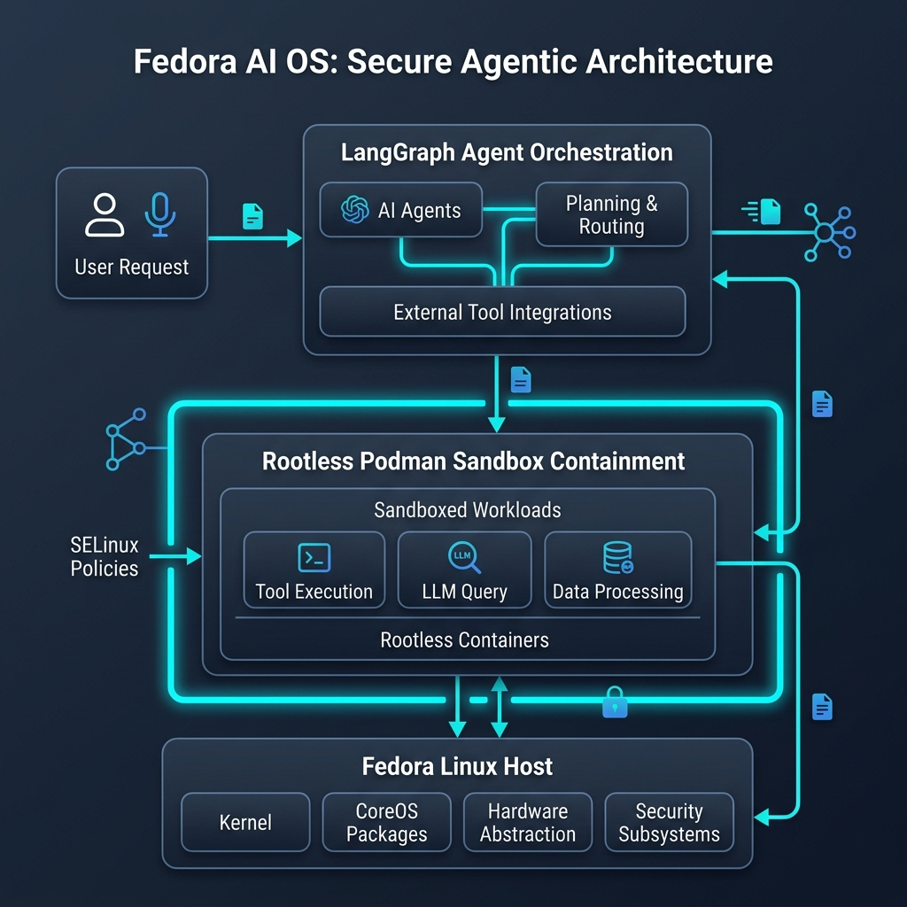

Fedora AI OS
An AI-Native secure Operating System layer designed for local containerized orchestration of autonomous AI agents.
The Challenge
Autonomous AI agents require direct operating system integrations to compile code, access file systems, and execute commands to solve complex tasks. However, running AI-generated code directly on the host machine presents severe security risks. A single wrong terminal command could lead to directory wipeouts, data corruption, or malicious local executions.
To build a reliable platform, we needed complete environment isolation, secure sandbox containment, strict permission controls, and automated recovery loops to resume agent runs if container sandboxes crashed.
System Architecture
We built a multi-layered security infrastructure combining containers and operating system access control policies.

AI agents execute inside isolated, rootless Podman containers on a Fedora Linux host. The agent's cognitive loops are managed using LangGraph, storing progress snapshots to restore state during unexpected crash events. Custom SELinux policies prevent the container processes from executing system calls beyond their sandbox boundaries, providing multiple defense-in-depth levels.
Measurable Impact
The container sandbox holds an absolute 100% success rate in isolating malicious local operations. In simulated attacks, folder deletion instructions and local script uploads were successfully contained within the sandbox. The checkpoint system recovers interrupted agent states within seconds after container restarts.
Challenges & Key Learnings
1. SELinux permissions mapping in rootless environments: Writing policies for container processes running under unprivileged user namespaces proved complex. Standard security policies locked down agent execution entirely. We resolved this by auditing denied syscall logs using auditd, isolating the exact paths needed for container volumes, and creating customized SELinux modules.
2. State recovery: Ensuring the agent can resume long-running automation tasks if its VM or Podman container crashes. By integrating LangGraph's SqliteSaver checkpoint saver, we mapped memory variables outside the sandbox volume, letting the agent resume execution instantly on sandbox reboot.
Future Improvements
- Deploy Model Context Protocol (MCP) servers to standardize system resource lookups.
- Integrate dynamic network firewalls to intercept untrusted API calls inside container namespaces.
- Optimize container startup delay to drop execution setup times under 500ms.